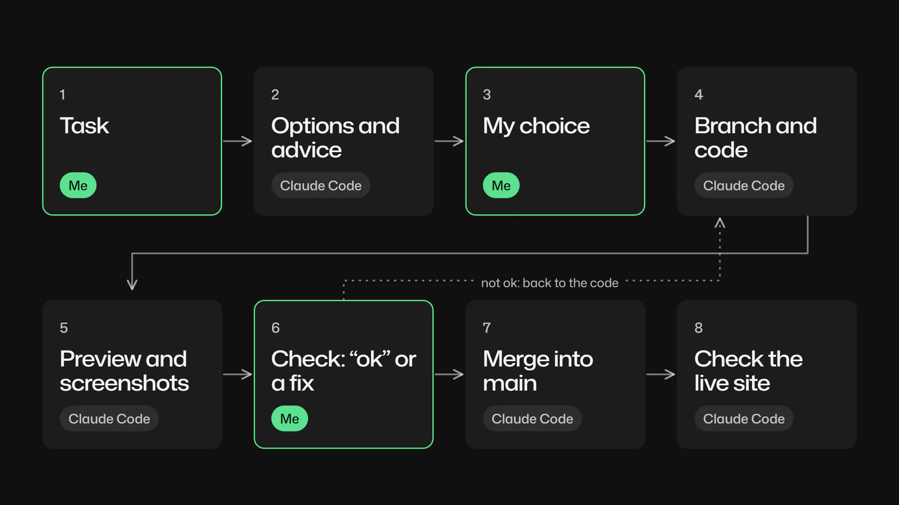
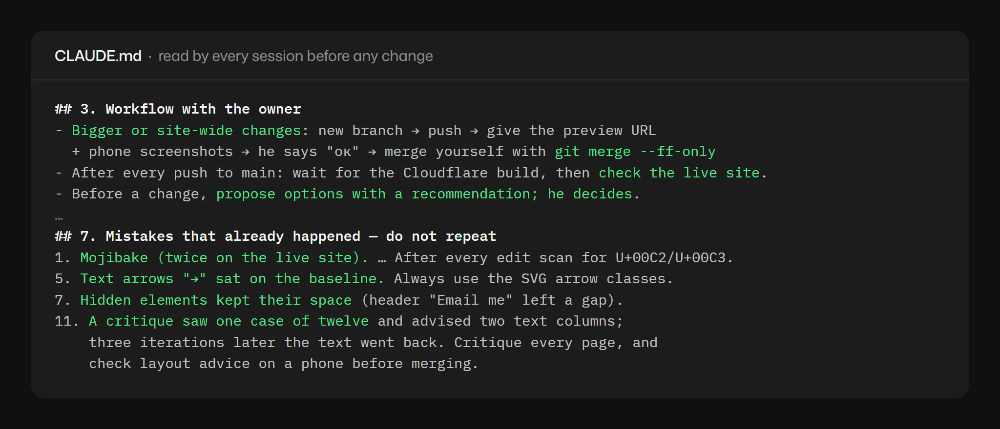
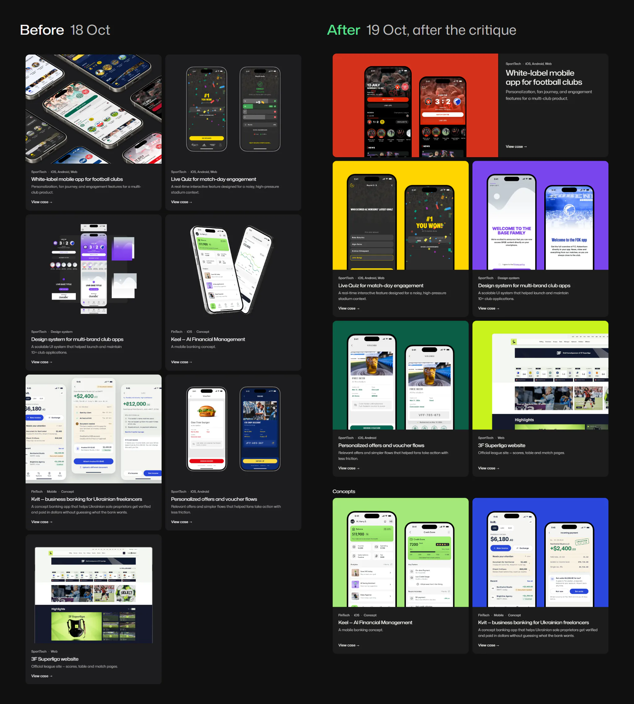
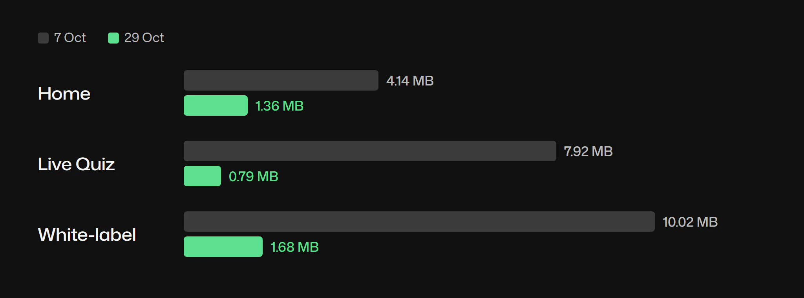

How I work with AI — Claude Code builds, I decide and check
- Role
- UI/UX & Product Designer
- Platform
- Web
- Domain
- Design processAI
- Team
- Solo, with Claude Code

- Problem
- I’m a designer, not a developer, and my portfolio needed a rebuild. AI had to write the code without taking the design decisions.
- What I did
- Built voitenkodesign.com with Claude Code, GitHub and Cloudflare: AI proposes options and writes code, I choose, review previews on my phone, turn mistakes into rules.
- Result
- In 24 days: 167 commits, 6 new case pages, big changes via preview branches. Pages got up to 10× lighter; eleven mistakes became rules.
This page shows how I build and run my portfolio with Claude Code: where AI works, where I decide, and how I check the result before it goes live.
Context
I’m a product designer, not a developer. The first version of this site came from another AI tool in early October. From 8 October I moved the work to Claude Code in the Claude app, with GitHub for the code and Cloudflare Workers for deploys and branch previews.
The split held all month. Claude writes all HTML, CSS and JS, converts images, measures layouts, commits and merges after my “ok”. I set the goals, choose between options, confirm every fact and review most visuals on my phone through Remote Control.
Four concept cases, Torba, Shtamp, Mira and Zgoda, I built from scratch the same way: their screens are HTML made in Claude Code, without opening Figma.
Constraints
- I’m not a developer. I judge the result by previews and screenshots, not by the code.
- I review on my phone. Most checks happen on a 375px screen, away from the desk.
- Each session starts fresh. Several Claude Code sessions worked on the site; none remembers the others.
- Facts must stay true. Metrics and team details can’t be filled in by a model.
Process
CLAUDE.md, the project memory. Every session reads it before a change: workflow, design tokens, content rules, checks before “done” and the mistakes that already happened. Since 15 October it has changed in 13 commits. Its token section came from an audit that found 22 font sizes and 17 hand-written colours; the site now uses 7 sizes.

The release cycle. Small fixes go straight to main when I say so. Anything bigger gets a branch, a preview link and phone screenshots, and merges only after my “ok”. Then Claude checks the live site.
Key decisions
One typeface or a pair?
Claude proposed rounds of serif italics, then one family for the whole site, then four grotesques. I suggested a Mona Sans and Geist pair; Claude advised against it, and I agreed. I chose Mona Sans everywhere, with wider headings. The cost: the hero title broke into four lines, so its minimum size dropped to 34px and “actually use.” never wraps.
Two “Email me” buttons on one screen?
Options: show the header button only after scrolling, change the hero button to “See work”, or hide the header button on phones. I chose the first two together. The cost: extra code in motion.js, one more commit when the hidden button left a gap, and a possible flicker on load.
Mistakes that became rules
I found most of these on my phone. Each became a line in CLAUDE.md, so the next session doesn’t repeat it.
- Broken characters on the live site. “·” turned into “·”. Rule: build special characters from codes and scan every file for broken encoding after each edit.
- A result cut in half. The Live Quiz result ended at “…12–”. Rule: no joining strings inside a PowerShell array.
- An extra 48px above About. I asked why the gap looked bigger; Claude measured 168px instead of 120. Rule: check the real gap between neighbours.
- Arrows on the baseline. Rule: only SVG arrows, centred on the type.
- A hidden button kept its space. Rule: a hidden element gives its width back.
AI as a critic: what I accepted, what I rejected
Once, Claude reviewed the live site in one pass with four skills: design-critique, impeccable (critique), design-taste-frontend and review-animations. It saw the home page and one case.
I accepted most of its ten notes: one system for case covers, the lead case first, concepts apart, our own accent instead of Tailwind’s, a bigger hero, a CV link. I kept the italic and the dark cards. A week later the concepts went back into one list.

One note was wrong. Two text columns in cases took three iterations; on my screenshots the text looked shifted, and I moved it back to the left edge. The new rule: critique every page, and check layout advice on a phone before merging.
What I don’t delegate
- Choices. Claude brings options with a recommendation; I pick, and sometimes undo my own pick after seeing it on desktop.
- Facts. I confirm the team, the shared design system and every metric; the metrics come from my screenshot of the company’s site.
- The visual check. Claude measures, checks links and scans encoding. How it looks on a real phone is mine to judge.
- The final “ok”. Nothing big reaches main without it.
Result
Repository numbers. From git, 6–29 October 2026.
167
commits on main, 117 co-signed by Claude
35
branches besides main
6
new case pages
4.14 to 1.36
MB, home page with images
Images moved to WebP. The code itself grew, from 14 to 64 KB of CSS and JS, as the token system and motion came in. Co-signed commits name Claude Opus 5.5 (112) and Sonnet 5.5 (5). Not measured: how long one change takes from my message to the live site.

What I learned
- A fix in chat is forgotten; a rule in CLAUDE.md isn’t. Only the file reaches the next session.
- A critique is as wide as what it saw. One case reviewed meant a 90px gap and alignment issues surfaced later.
- My phone is the real test. Most visual bugs showed up on my screenshots, not in Claude’s checks.